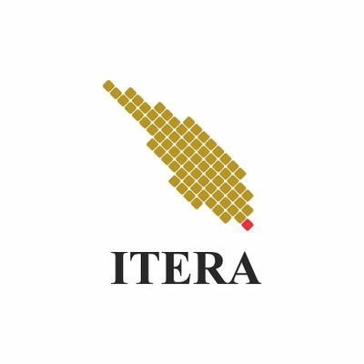

|  |
Institut Teknologi Sumatera |
| Institut Teknologi Sumatera, disingkat ITERA, adalah sebuah perguruan tinggi negeri yang terdapat
di Provinsi Lampung di Pulau Sumatra (bentuk tidak baku: Sumatera). Lokasinya berada di antara wilayah
Kabupaten Lampung Selatan dengan Kota Bandar Lampung. ITERA didirikan berdasarkan Peraturan Presiden Nomor
124 Tahun 2014 tentang Pendirian Institut Teknologi Sumatera (Lembaran Negara Republik Indonesia Tahun 2014 Nomor 253)
|
 |
Institut Teknoogi Bandung |
| Institut Teknologi Bandung disingkat sebagai ITB, adalah sebuah perguruan tinggi negeri
yang berkedudukan di Kota Bandung. Nama ITB diresmikan pada tanggal 2 Maret 1959.
Kampus utama ITB saat ini merupakan lokasi dari sekolah tinggi teknik pertama di Indonesia.
ITB telah memiliki 27 program studi yang terakreditasi secara internasional.
|
 |
Institut Teknologi Sepuluh November |
| Institut Teknologi Sepuluh Nopember (disingkat ITS) adalah perguruan tinggi negeri yang terletak di Surabaya.
Pada awalnya, ITS didirikan oleh Yayasan Perguruan Tinggi Teknik (YPTT) yang diketuai oleh dr. Angka Nitisastro pada 10 November 1957.
Dies Natalis ITS pertama dilaksanakan pada 10 November 1960, sementara nama "ITS"
mulai digunakan dalam Peraturan Pemerintah No. 9 tahun 1961 (ditetapkan tanggal 23 Maret 1961).
Dalam visi awal, ITS ditujukan untuk mendidik para pemimpin yang unggul di bidang sains dan teknologi,
untuk mengangkat Republik Indonesia menjadi negara berperadaban maju dan tinggi.
|